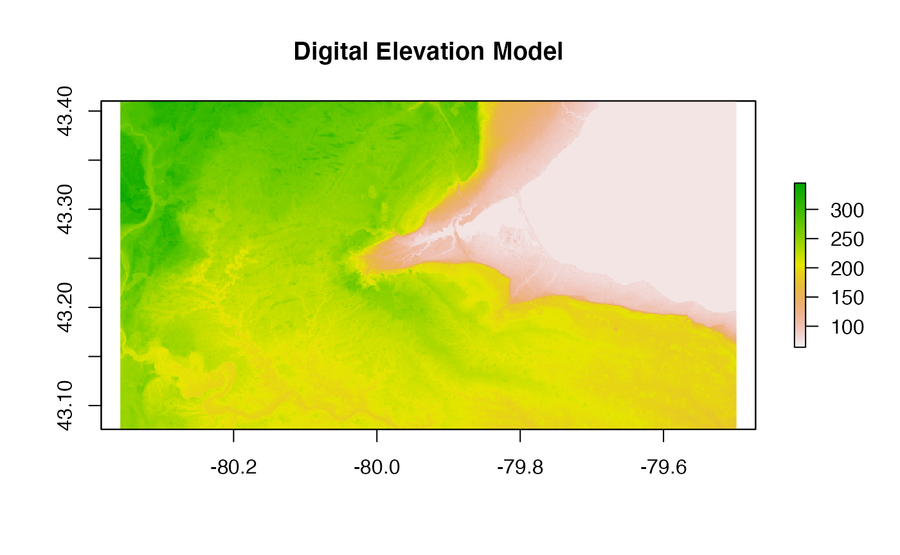
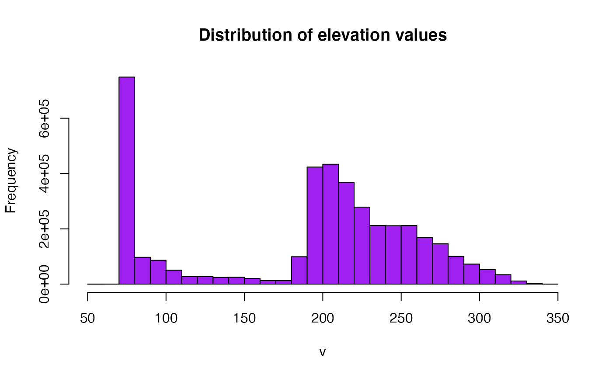
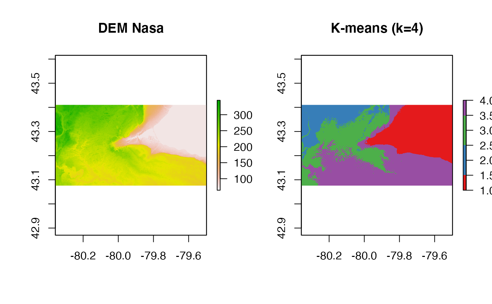

vignettes/relief_segmentation.Rmd
relief_segmentation.RmdLibrary loads:
First we load the raw digital elevation model
(a major refactor was incorporating the usage of the Raster package {link1}{link2}, which brings a lot of functionalities of traditional remote sensing data workflows in a standardized way)

Now we calculate the distribution of heights in this region:
hist(dem_hamont, main="Distribution of elevation values",
col= "purple",
maxpixels=22000000)
On the histogram, we see at least four classes (approximately):
Based on this histogram pattern, it is possible to derive labels for each pixel as a manner to do a initial Land Cover, using an unsupervised method.
For this end, we can use a classical clustering algorithm, K-means.
The naïve k-means* can be defined as:
Step 1: Set k initial means , to be randomly assigned in the domain being clustered;
Step 2: Associate every observation with the nearest mean (this generates a Voronoi partition field);
Step 3: The centroid of each cluster (each Voronoi partition) becomes the new mean;
Step 4: Repeat steps 2 and 3 until reaching convergence.Note: Convergence on the naïve k-means is a NP-hard problem. Packages often solve this by using heuristics and other strategies for early stopping.
The complexity of the naïve k-means is \(O(nkdi)\) where:
For our application, we may define :
nr <- getValues(dem_hamont)
set.seed(1)
# We want to create 10 clusters, allow 500 iterations, start with 5 random sets using "Lloyd" method
kmncluster <- kmeans(na.omit(nr), centers = 4, iter.max = 500, nstart = 4, algorithm="Lloyd")
# kmeans returns an object of class "kmeans"
str(kmncluster)
#> List of 9
#> $ cluster : int [1:3960031] 2 2 2 2 2 2 2 2 2 2 ...
#> $ centers : num [1:4, 1] 81 285 242 202
#> ..- attr(*, "dimnames")=List of 2
#> .. ..$ : chr [1:4] "1" "2" "3" "4"
#> .. ..$ : NULL
#> $ totss : num 2.09e+10
#> $ withinss : num [1:4] 2.77e+08 1.38e+08 1.30e+08 2.86e+08
#> $ tot.withinss: num 8.31e+08
#> $ betweenss : num 2.01e+10
#> $ size : int [1:4] 1064750 534240 901297 1459744
#> $ iter : int 18
#> $ ifault : NULL
#> - attr(*, "class")= chr "kmeans"The fixed seed is set, to be able to reproduce performance (although not recommended for production usage). In which \(k = 4\) and \(i=500\), as defined at the naïve k-means algorithm.
Other relevant information comes from the run output (take in consideration that here it is analyzed the ones resultant from \(seed = 1\)):
From this output is important to highlight that convergence is reached fast, with only 18 iterations. Another aspect is that despite the data variance, the algorithm produces classes that are homogeneous, in comparison of others (by maximizing intraclass similarity, with values for each class at order eight, while maximizing extraclass dissimilarity, with values of classes distant at order ten - with basically two orders of magnitude of separation).
With this successful result, we can assign classes to these images as:
knr <- raster(dem_hamont)
values(knr) <- kmncluster$cluster
knr
#> class : RasterLayer
#> dimensions : 1241, 3191, 3960031 (nrow, ncol, ncell)
#> resolution : 0.0002694946, 0.0002694946 (x, y)
#> extent : -80.35811, -79.49816, 43.07578, 43.41023 (xmin, xmax, ymin, ymax)
#> crs : +proj=longlat +datum=WGS84 +no_defs
#> source : memory
#> names : layer
#> values : 1, 4 (min, max)And finally, we compare the original data with color ramp to the learned classes:
mycolor <- c("#e41a1c","#377eb8", "#4daf4a", "#984ea3")
par(mfrow = c(1,2))
plot(dem_hamont, main = 'DEM Nasa')
plot(knr, main = 'K-means (k=4)', col = mycolor ) As we can see, the choice of four classes allow to segment relevant regions in the area such as the Lake Ontario (in red), the Mountain area of Hamilton (in violet), the higher area in Burlington (in blue), and lower areas of both Hamilton and Burlington.
Note that the smaller portion of lake ontario that is closer to the Royal Botaninc Gardens and Cootes Paradise, is not put together with the main Lake Ontario class. This is maybe due to errors in acquisition, in which this section closer to the lake edge, gets some influence from its higher neighborhood. In this case the k-means algorithm only looks to single pixel values, and is prone to errors such as these (which may be solved with usage of better spatial representations).